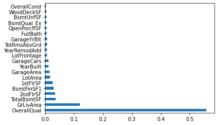
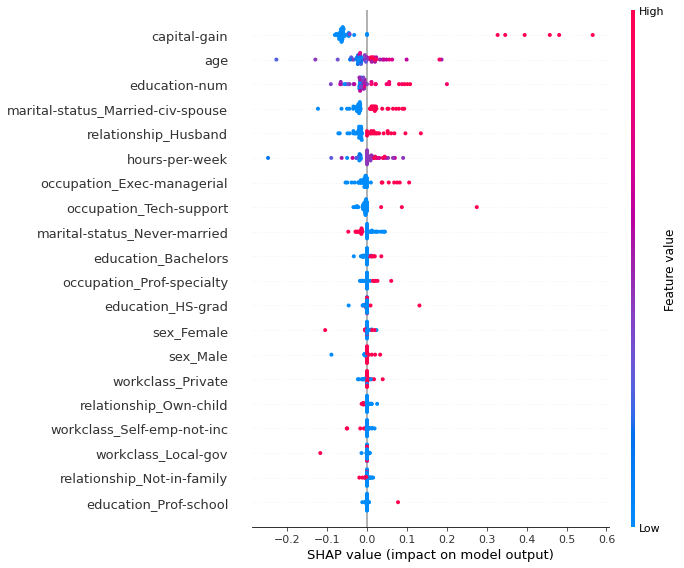

import pandas as pd
from causalnlp.key_driver_analysis import KeyDriverAnalysisKey Driver Analysis
Key driver analysis to yield clues into potential causal relationships in your data by determining variables with high predictive power, high correlation with outcome, etc.
KeyDriverAnalysis
KeyDriverAnalysis (df, outcome_col='outcome', text_col=None, include_cols=[], ignore_cols=[], verbose=1)
Performs key driver analysis
KeyDriverAnalysis.correlations
KeyDriverAnalysis.correlations (outcome_only=True)
Computes corelations between independent variables and outcome
df = pd.read_csv('sample_data/houses.csv')kda = KeyDriverAnalysis(df, outcome_col='SalePrice', ignore_cols=['Id', 'YearSold'])outcome column (numerical): SalePrice
treatment column: CausalNLP_temp_treatment
numerical/categorical covariates: ['MSSubClass', 'MSZoning', 'LotFrontage', 'LotArea', 'Street', 'Alley', 'LotShape', 'LandContour', 'Utilities', 'LotConfig', 'LandSlope', 'Neighborhood', 'Condition1', 'Condition2', 'BldgType', 'HouseStyle', 'OverallQual', 'OverallCond', 'YearBuilt', 'YearRemodAdd', 'RoofStyle', 'RoofMatl', 'Exterior1st', 'Exterior2nd', 'MasVnrType', 'MasVnrArea', 'ExterQual', 'ExterCond', 'Foundation', 'BsmtQual', 'BsmtCond', 'BsmtExposure', 'BsmtFinType1', 'BsmtFinSF1', 'BsmtFinType2', 'BsmtFinSF2', 'BsmtUnfSF', 'TotalBsmtSF', 'Heating', 'HeatingQC', 'CentralAir', 'Electrical', '1stFlrSF', '2ndFlrSF', 'LowQualFinSF', 'GrLivArea', 'BsmtFullBath', 'BsmtHalfBath', 'FullBath', 'HalfBath', 'BedroomAbvGr', 'KitchenAbvGr', 'KitchenQual', 'TotRmsAbvGrd', 'Functional', 'Fireplaces', 'FireplaceQu', 'GarageType', 'GarageYrBlt', 'GarageFinish', 'GarageCars', 'GarageArea', 'GarageQual', 'GarageCond', 'PavedDrive', 'WoodDeckSF', 'OpenPorchSF', 'EnclosedPorch', '3SsnPorch', 'ScreenPorch', 'PoolArea', 'PoolQC', 'Fence', 'MiscFeature', 'MiscVal', 'MoSold', 'YrSold', 'SaleType', 'SaleCondition']
preprocess time: 0.3556947708129883 secdf_results = kda.correlations()
df_results.head()| SalePrice | |
|---|---|
| OverallQual | 0.790982 |
| GrLivArea | 0.708624 |
| GarageCars | 0.640409 |
| GarageArea | 0.623431 |
| TotalBsmtSF | 0.613581 |
assert df_results.iloc[[0]].index.values[0] == 'OverallQual'KeyDriverAnalysis.importances
KeyDriverAnalysis.importances (plot=True, split_pct=0.2, use_shap=False, shap_background_size=50, rf_model=None, n_estimators=100, n_jobs=-1, random_state=42)
Identifies important predictors using a RandomForest model.
Example: Variable Importances for Housing Prices
df_results = kda.importances()
df_results.head()R^2 Training Score: 0.98
OOB Score: 0.85
R^2 Validation Score: 0.89| Driver | Importance | |
|---|---|---|
| 3 | OverallQual | 0.557707 |
| 15 | GrLivArea | 0.121145 |
| 11 | TotalBsmtSF | 0.035977 |
| 13 | 2ndFlrSF | 0.033758 |
| 8 | BsmtFinSF1 | 0.028563 |

Example: Variable Importances for Probability of Making Over $50K
import pandas as pddf = pd.read_csv('sample_data/adult-census.csv')
kda = KeyDriverAnalysis(df, outcome_col='class', ignore_cols=['fnlwgt'])
df_results = kda.importances(use_shap=True, plot=True)
df_results.head()replaced ['<=50K', '>50K'] in column "class" with [0, 1]
outcome column (categorical): class
treatment column: CausalNLP_temp_treatment
numerical/categorical covariates: ['age', 'workclass', 'education', 'education-num', 'marital-status', 'occupation', 'relationship', 'race', 'sex', 'capital-gain', 'capital-loss', 'hours-per-week', 'native-country']
preprocess time: 0.5094420909881592 sec
R^2 Training Score: 0.98
OOB Score: 0.85
R^2 Validation Score: 0.85
| Driver | Importance | |
|---|---|---|
| 2 | capital-gain | 0.102854 |
| 0 | age | 0.036508 |
| 1 | education-num | 0.035481 |
| 32 | marital-status_Married-civ-spouse | 0.031246 |
| 52 | relationship_Husband | 0.028451 |